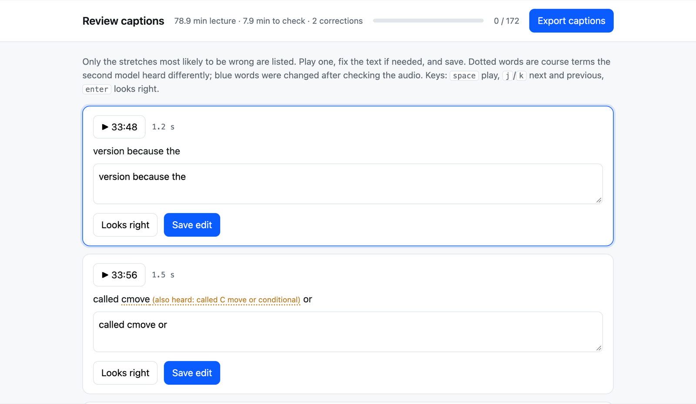

zoom recordings / accessibility / tested on MIT lectures
every caption looks right.
some aren't.
Zoom's lecture captions get almost every word right, then quietly miss the course terms, the words students search for, write down and get tested on. CaptionFix double-checks them with a second model and the slides, and sends a TA to the six minutes per lecture hour that need a human.
01 / read it with the sound off
what did the professor say?
Three real Zoom captions from the test lectures, with the sound off. One word in each is wrong. Pick what you think was said, then hear it.
02 / try it
what a student would see.
An excerpt from a lecture in a course CaptionFix never saw while it was being built. Press play: the slide that was up follows the audio, course terms the two models disagree on are marked with what the second model heard, and the terms list jumps to where each one is said.
03 / why
a lot of students read the lecture.
Captions are how many students take in a lecture. Students who are deaf or hard of hearing, students listening in a second language, anyone watching muted in a library or rewatching at 2x.
Auto captions miss the words that matter. A wrong caption looks exactly as sure of itself as a right one.
Checking every word by hand does not scale. A lecture is an hour, a course has 25 of them, and fully verified captions usually take days.
04 / how it works
two models, the slides, and six minutes of a TA's time.
Zoom captions
The lecture recording goes to Zoom's speech-to-text API, which writes the captions.
A second opinion
An open-source model, Whisper, transcribes the same recording on the laptop. Where the two disagree, something is probably wrong.
Course terms first
Words from the lecture slides and other rare terms tell it which disagreements matter most. Those are marked in the captions.
Six minutes for a TA
The most likely mistakes, 10% of the lecture, go on a review list. The TA plays each one, fixes or accepts it, and exports the captions.
05 / results
tested against MIT's human captions.
06 / review
six minutes, not an hour.
The review page lists only the flagged stretches. Press space to hear one, fix the text or press enter if it is right, and export the captions when you are done.

07 / run it
one command per lecture.
Needs a Mac with Apple silicon, Python 3.12, uv and ffmpeg,
and a Zoom AI Services API key in .env as ZOOM_API_KEY. Without a key,
--engine whisper runs everything on the laptop.
Caption a recording
Download the recording from Zoom (.mp4 or .m4a) and the slides as a PDF.
uv sync
uv run captionfix run lecture.mp4 \
--slides slides.pdf --out out/lecture1
uv run captionfix review out/lecture1
# open http://localhost:8000
Reproduce the numbers
Downloads the MIT OpenCourseWare lectures and scores them against their human captions.
uv run python scripts/fetch_lectures.py uv run python scripts/evaluate.py tune --engine zoom uv run python scripts/evaluate.py test uv run python scripts/evaluate.py fresh